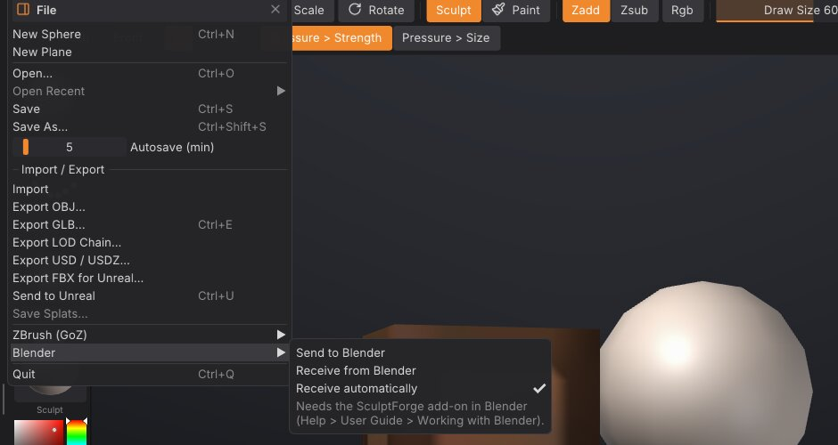

Working with Blender
Keep Blender for the scene, rigging, shading and animation, and sculpt in SculptForge: the SculptForge Bridge add-on sends the selected objects from Blender to SculptForge with one click, and one click in SculptForge sends them back. The objects update in place in Blender: their transform, materials and modifiers stay as they were. It works like GoZ between ZBrush and other apps, on Linux, Windows and macOS, with Blender 4.2 or newer.
Install the add-on#
-
Download
sculptforge_bridge.zipfrom the latest release (or the SculptForge website). - In Blender choose Edit > Preferences > Get Extensions, open the menu at the top right and choose Install from Disk..., then pick the zip. (You can also drag the zip into Blender's window.)
- The SculptForge tab appears in the 3D View's sidebar (press N). Send and Receive are also in the Object menu and in File > Import / Export.
Start SculptForge once after installing it: it records where it is installed, so the add-on can start it for you. If the add-on still can't find it (for example an AppImage you keep somewhere unusual), set its path in the add-on's preferences (Edit > Preferences > Add-ons > SculptForge Bridge).
A round trip#
- In Blender, select one or more mesh objects and click Send to SculptForge in the SculptForge tab. SculptForge starts, or, if it's already open, loads them within a second. Each object becomes a SubTool with the object's name, placed as it is in the Blender scene.
- Sculpt, paint, mask, divide, remesh: anything SculptForge does.
- In SculptForge choose File > Blender > Send to Blender. Every visible SubTool goes back.
- Blender picks it up by itself within a second (or click Receive from SculptForge). Each object that came from Blender is updated; a SubTool you added in SculptForge becomes a new object.
Sending again from Blender updates the same SubTools: each update is one undo step on that SubTool in SculptForge, and each receive in Blender is one undo step there.


What comes across#
| Blender | SculptForge | |
|---|---|---|
| Shape | The object's mesh, in its own space | The SubTool, placed in the scene with the object's transform |
| Faces | Triangles and quads; n-gons as triangle fans | Triangles and quads (PolyF shows the quads) |
| UVs | The active UV map | UVs |
| Colour | The active colour attribute (point or face corner) | Polypaint |
| Mask | The sculpt mask | Mask |
| Face sets | Sculpt mode face sets | Polygroups |
| Name | Object name | SubTool name |
Blender is Z-up and SculptForge Y-up, both in metres; the add-on and SculptForge convert between them, so the model stands the same way in both and a round trip changes nothing. Objects with a negative scale (mirrored) come across the right way out.
When the topology doesn't change (you only sculpted, painted or masked), Blender's mesh keeps everything it had: its n-gons, edges, seams, creases, custom attributes and the other UV maps; only the positions, the active UV map, colour, mask and face sets are updated.
When the topology changes (Divide, a remesh, QRemesh, Subdivide...), the object's mesh is rebuilt from what SculptForge sent. The object keeps its transform, materials, modifiers and the names of its active UV map and colour attribute; things tied to the old faces (material per face, seams, other UV maps, shape keys) can't follow and are reset.
Modifiers#
The Modifiers setting in the SculptForge tab chooses what an object with modifiers sends:
- Keep live (the default): the mesh under the modifiers. They keep working in Blender on the sculpted mesh, for example a Mirror or a Subdivision Surface.
- Apply: what you see, with the modifiers applied. When it comes back, the mesh holds their result, so the add-on turns those modifiers off (they stay on the object, switched off, if you want them again).
Settings#
In the SculptForge tab:
- Receive automatically: after a send, load what SculptForge sends back as soon as it arrives (on by default). Off: click Receive from SculptForge yourself.
In SculptForge's File > Blender:
- Receive automatically: load what Blender sends as soon as it arrives (on by default).
The add-on's preferences add the path of SculptForge and the exchange folder (below).
ZBrush-style keys in Sculpt Mode#
Sculpting in Blender too? Turn on ZBrush-style keys in Sculpt Mode in the add-on's preferences (Edit > Preferences > Add-ons > SculptForge Bridge) and Blender's Sculpt Mode answers to ZBrush's keys where Blender has the same thing. Turning it off removes them again, and Blender's own keys are back; so does disabling the add-on. The preferences list every key while it's on.
| ZBrush key | In Blender's Sculpt Mode |
|---|---|
| S / U / O | Draw Size / Z Intensity (Strength) / Focal Shift (Hardness), dragged at the cursor |
| Space | Blender's Sculpt quick menu at the cursor (brush, size, strength) |
| B | The brush list by ZBrush name (Standard, DamStandard, Clay, ClayBuildup, Move, SnakeHook...): type a few letters, Enter picks |
| Alt+drag | Zsub: the brush digs in |
| Ctrl+drag / Ctrl+Alt+drag | Mask / unmask, drawn as a lasso |
| Ctrl+Shift+drag / Ctrl+Shift+Alt+drag | Show only what's inside / hide what's inside |
| Ctrl+W | Group the masked part as a face set and clear the mask (with nothing masked: the visible part) |
| Ctrl+D / D / Shift+D | Divide (a Multires level) / SDiv up / SDiv down (never adds a level) |
| X | Symmetry X |
| Shift+F | PolyFrame (the wireframe overlay) |
| F / P | Frame the model / perspective on and off |
| L | LazyMouse (Blender: Stabilize Stroke) |
| W / E / R | Move / Scale / Rotate |
| Shift+drag | Smooth (Blender already does this) |
The ZBrush brushes map to Blender's closest: Standard = Draw, DamStandard = Draw Sharp, ClayBuildup = Clay Strips, Move = Grab, Move Elastic = Elastic Grab, TrimDynamic = Trim (Scrape in Blender 4.2), Crease = Crease Sharp, MaskPen = Mask.
What Blender has no key for, or can't do the ZBrush way:
- I (RGB Intensity): Blender's sculpt brushes don't paint.
- Ctrl+drag on the model doesn't paint the mask with a round brush: Blender can't switch to the Mask brush for one stroke, so it draws a mask lasso (pick the Mask brush with B to paint it).
- Dragging on the empty background doesn't rotate: a keymap can't tell the model from the background. Use the middle mouse button, or Blender's Emulate 3 Button Mouse.
- Ctrl+click on the background (invert or clear the mask) and Ctrl+Shift+click (show all): use Ctrl+I, Alt+M and Alt+H.
- B then two letters: a Blender menu takes one key at a time, so B opens the list and the letters filter it.
- Alt+click a SubTool: Blender's objects aren't SubTools (Alt+Q switches the object you sculpt).
- Stroke types (DragRect, Spray...): each Blender brush sets its stroke method in its Stroke panel.
These keys take Blender's place while they're on: F no longer sets the radius (that's S), B no longer draws a box mask, Ctrl+drag no longer inverts the brush (that's Alt), and Space no longer plays the animation in Sculpt Mode.
Vector displacement maps#
SculptForge's VDM brushes and Blender's use the same maps (see Vector displacement brushes):
- From Blender: a map baked with Blender's VDM Brush Baker loads with Brush > Vector Displacement > Load VDM... as it is.
- To Blender: Export EXR... writes the VDM brush's map. In Blender, in Sculpt Mode with a Draw brush: in the brush's Texture panel add a new image texture and open the EXR (set its Color Space to Non-Color), set Mapping to Area Plane, turn on Vector Displacement, then set the stroke method to Anchored and Strength to 1. Drag on the model to stamp it.
How it works#
The two programs share a folder in your user data: ~/.local/share/SculptForge/SculptForge/blender on Linux, %APPDATA%\SculptForge\SculptForge\blender on Windows, ~/Library/Application Support/SculptForge/SculptForge/blender on macOS. Each side writes its meshes there as .GoZ files (the format SculptForge also uses with ZBrush) with a small list of the objects, and checks the other side's list once a second. Nothing goes over the network.
To use another folder, set it in the add-on's preferences and start SculptForge with the environment variable SCULPTFORGE_BLENDER_EXCHANGE set to the same folder.
From scripts and the MCP server: blender_send and blender_receive (both take folder=). Starting SculptForge with --blender loads what Blender last sent.
Limits and troubleshooting#
-
Blender as a Flatpak or Snap sees a different user data folder and may not be allowed to start other programs. Set the add-on's exchange folder to a folder both can reach, start SculptForge yourself with
SCULPTFORGE_BLENDER_EXCHANGEset to it, and send. - Linked duplicates (objects sharing one mesh) all show the last one received.
- Shape keys: the Basis and the keys named like SculptForge's layers are updated; other keys keep their shapes.
- Subdivision levels don't go to Blender: it receives the level you're on (like GoZ).
- Sculpt layers arrive as shape keys (Basis plus one key per layer, with its name and weight), so the 52 facial shapes keep their ARKit names. Shape keys don't come back from Blender, and textures stay in SculptForge.
- Nothing arrives in SculptForge? Check File > Blender > Receive automatically, or choose Receive from Blender. Nothing arrives in Blender? Click Receive from SculptForge; automatic receiving starts after the first send from that Blender session.
- Objects in Edit Mode or Sculpt Mode are updated too: the add-on switches to Object Mode for the update and back.
See also#
- Exporting, Unreal and ZBrush: files, game engines and GoZ
- SubTools: each Blender object is a SubTool
- Polygroups and visibility: Blender's face sets